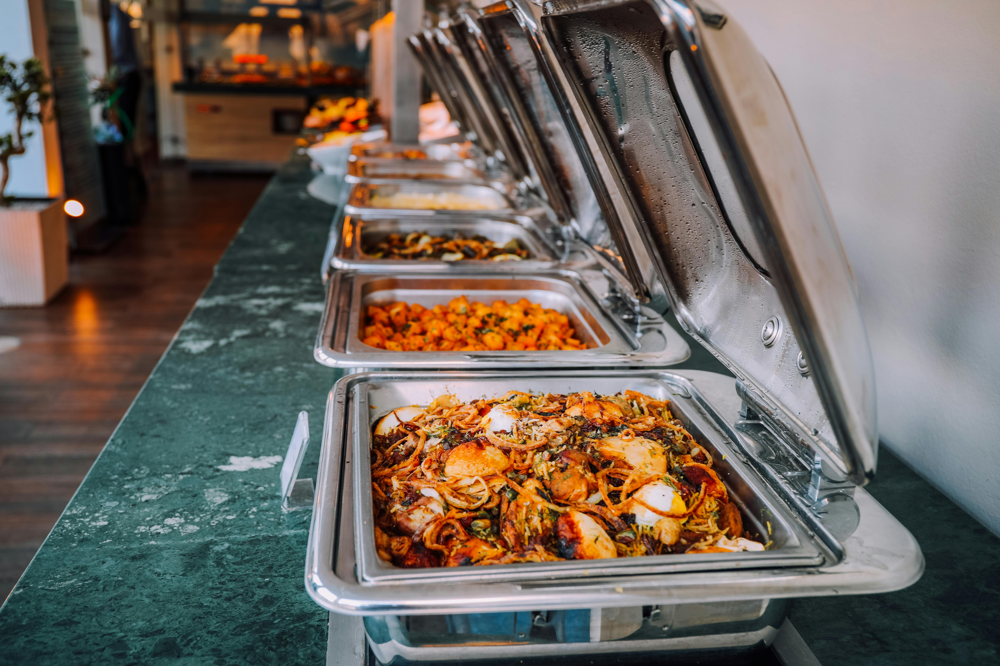
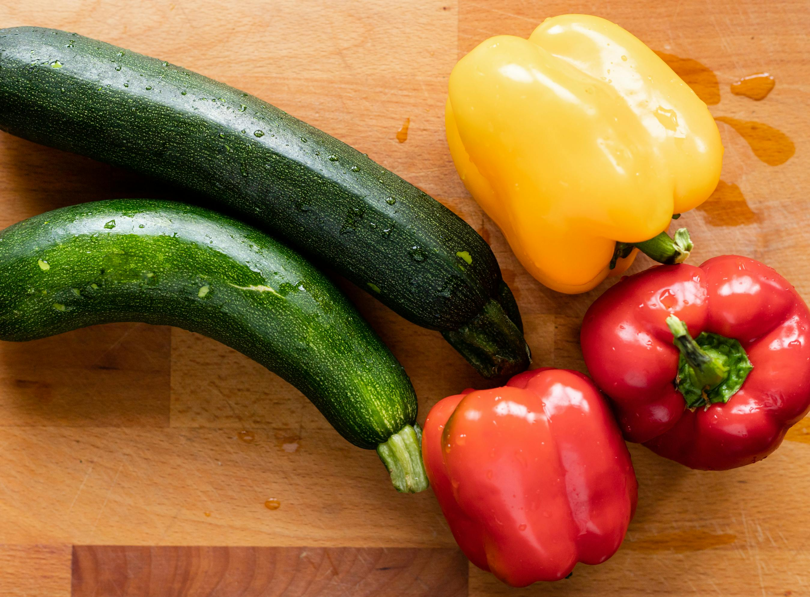

Os Segredos de uma feijoada perfeita
Descubra as técnicas tradicionais para preparar um dos pratos mais emblemáticos da gastronomia Angolana.
Ler Mais →Histórias, receitas e dicas do mundo da gastronomia

Descubra as técnicas tradicionais para preparar um dos pratos mais emblemáticos da gastronomia Angolana.
Ler Mais →
Aprenda a escolher o vinho perfeito para cada tipo de prato e impressione os seus convidados.
Ler Mais →
Conheça os nossos fornecedores locais e entenda por que a qualidade dos ingredientes faz toda a diferença.
Ler Mais →Uma viagem pela rica história culinária de Angola, desde as especiarias das descobertas até hoje.
Ler Mais →